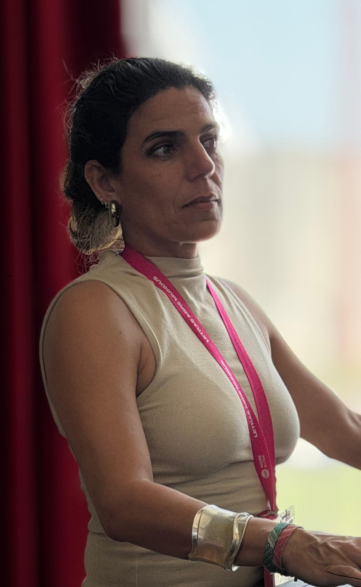

I am a psycholinguist — Assistant Professor in the Department of General and Romance Linguistics at the School of Arts and Humanities, University of Lisbon, and Principal Investigator of the Psycholinguistics Laboratory at the Centre of Linguistics of the University of Lisbon (CLUL), which I co-direct with João Veríssimo. My research focuses on how readers build meaning in real time, exploring topics such as coreferential resolution and the processing of discourse relations. I work with experimental techniques such as eye-tracking (since 2003) and self-paced reading. Much of this work centres on the contrast between the European and Brazilian Portuguese pronominal systems, using it as a window into the general mechanisms of language processing. On this website, you'll find my publications and the courses I teach each year.